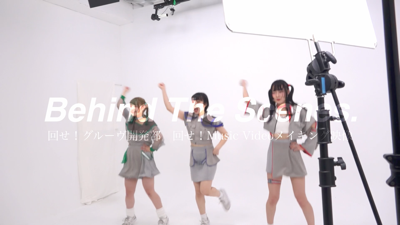
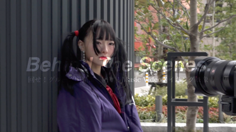
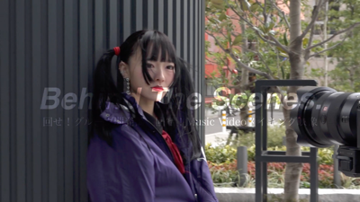
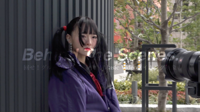

【MVメイキング映像】「回せ！」回せ！グルーヴ開発部
2020.04 / Making Moive / Director , Cinematographer & Editor / 4min 35sec

 

セルフプロデュースアイドル「回せ!グルーヴ開発部」の1st Single「回せ！」のMV制作の様子を納めたメイキングムービー
Credits
- Producer : 回せ！グルーヴ開発部 Official HP
- Director, Cinematographer : Tomoya Onuki
- Camera : Aomi Nowatari
- Cast : Bon Kumono / Yuni Okota / Anzu Tamaki / Ryoma Suizu / Ryosuke Tsuzuki
- Staff : Sakai